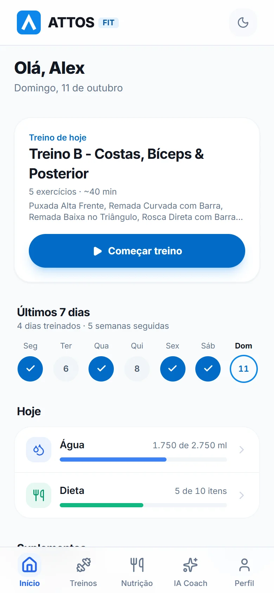
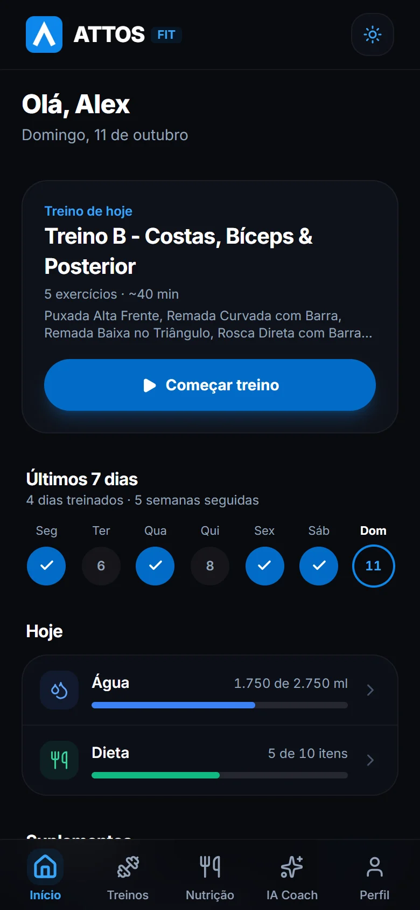

Attos
Sua evolução na palma da mão
O app de musculação que monta seu treino, registra cada série e mostra o quanto você evoluiu.
Baixar no Google PlayPara Android. Registrar treinos é grátis para sempre.
- Responda 6 perguntas e receba uma divisão para o seu objetivo
- Carga e repetições da última vez ao lado de cada série
- Constância, volume, recordes e 1RM estimado a partir do que você registrou

